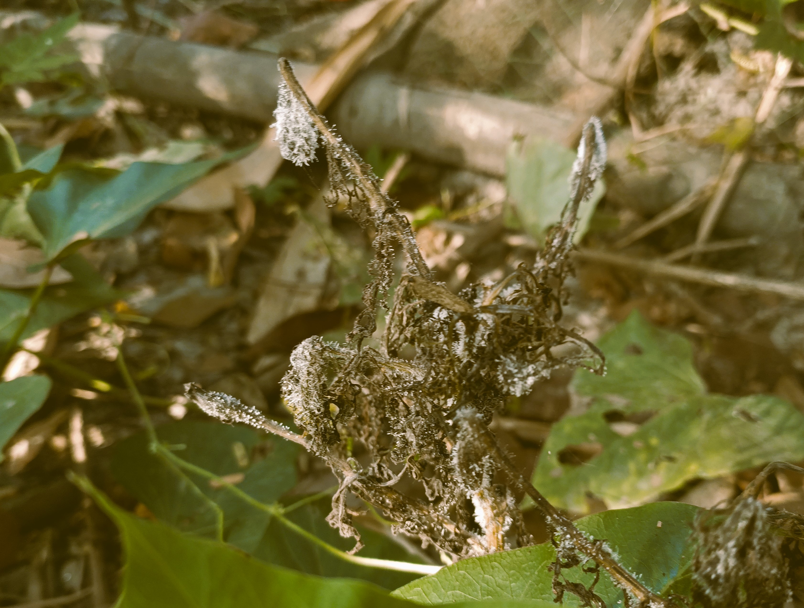

আমি পূর্বে ধারনা করেছিলাম 'সময়' মরো মরো এবং সময়ের মতো আরো কিছু পুরোপুরি নিখোঁজ হয়ে গিয়েছে দুনিয়া থেকে। ভাবতে ভাবতে বুঝেছিলাম সেটা ওয়েভ।
তবে ধ্বংসের দুনিয়ায় ধ্বংসপ্রাপ্ত এ ওয়েভ কি রুপে দেখা যেতো?
আমি আগে একটা বিজ্ঞানভিত্তিক কাহিনী বলতাম, যেটা পড়ে সবাই হয়তো অনেক আগ্রহে শুনতো। সেটা হলো, গরমকালে খাবার সহজে পচে যায়। কারন বাতাসে জীবনুর কণা ঘোরে এবং উষ্ণ পরিবেশে সহজে বংশবিস্তার করতে পারে। তাই গরমকালে ডাউল বা খাবার তাড়াতাড়ি নষ্ট হয়ে যায়।

সেখানেও বাতাস কি এসব নিয়ে বললেও বিরাট অর্থে তা অন্যরকম। এখানে বাতাস হলো ওয়েভের জট। যা বয়ে বেরানোতে অন্যকিছু নড়ে। তাহলে ফ্যান ছাড়লে বাতাস আসে কেনো? কারন ফ্যান পিছনের জটকে সামনের দিকে আন্দোলিত করে। আর বাতাস বা ওয়েভের জট বয়।
গরমকালে বাতাস আমাদের প্রশান্তি দেয়। কারন, উত্তাপে বাতাস বা ওয়েভে জট বেশি কাঁপা-কাঁপি করে। আর বর্তমান ধ্বংশের দুনিয়ায় কান্নার জট ঘুরে বেড়ায়। তাই স্বাভাবিক অবস্থা কান্না, খারাপলাগা ও জ্বলা এসবের একটা আভা ঘিরে রাখে। কিন্তু বাতাস বইলে বাতাসের বা ওয়েভের জট সেসব আভাকে টেনে নেয় এবং স্বস্তি লাগে। ওয়েভের জট মানে, ভিতরে খারাপ লাগার অনুভূতি থাকলেও তা একটু কম অনুভবযোগ্য কারন, জটের মধ্যে জড়ানো। আর শীতে জটগুলো যেনো ঠান্ডায় আরো জমে থাকে।
তবে ধ্বংসের দুনিয়ায় মৃত ওয়েভ'কে বাতাস নয় ; অন্যরূপে দেখা যেতো। সেটা হলো, পঁচা জিনিসের উপরে হওয়া গুড়োগুড়ো সাদা সাদা জীবাণুর মতো ছত্রাক সাদৃশ বস্তু! কারন, সবার মনে দুঃখ বা এতো দুঃখ কষ্ট যে, সেগুলো রাগের সাথে মিশে বিষ হয়ে ঘুরে বেরায়। তাই দুঃখ ও রাগের ওয়েভ মিলে ওয়েভের জট যা আরো ওয়েভের সাথে মিলে ঘন হতে হতে ওরুপ বিষ হয়ে ওঠে!
(তখন বলতাম, বায়ুর কণা শব্দের ওয়েভ বহন করে। তো বাতাস না থাকলে শব্দ হবে কিভাবে? এখানে কিন্তু একটা বিষয়, সবকিছু থেকেই ওয়েভ বের হয়। তাই শূন্য স্থান কখনই বাতাস না থাকলে পুরোপুরি শূন্য নয়। মানে শব্দের তরঙ্গ বহন করার মতো কণা থাকবে!)
- Moloy Ghosh 2/15/2025